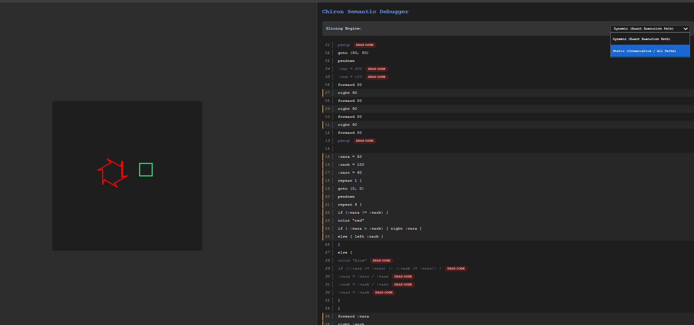
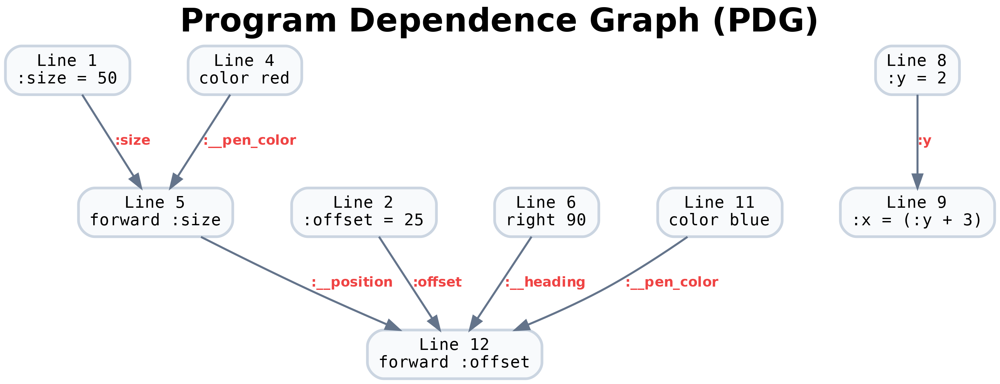
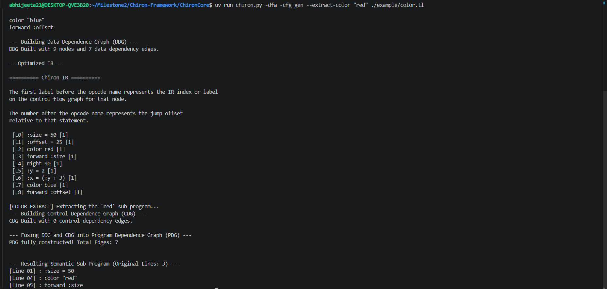

Chiron is already a fantastic educational framework with a solid compiler and Control Flow Graph. We wanted to expand its capabilities to include advanced tools like program slicing, dead-code detection, and taint tracking. These features are incredibly helpful because they allow students to deeply understand how different parts of their code influence each other.
The Visual Challenge: Standard analyzers only track regular variables (like numbers) and completely ignore the graphical state, such as the turtle's position, heading, or pen color. Because of this blind spot, if a visual bug occurs-like a stroke drawn in the wrong place-the system can't help you find the code responsible.
We built a slicing engine that tracks these hidden visual states right alongside regular variables. This bridges the gap between the complex background analysis and the actual visual output. By making this connection, we solve a very practical debugging problem: the system can now instantly trace any rendered line on the canvas back to the exact source line of code that produced it.
This turns the visual canvas into an excellent debugging tool, making it intuitive, educational, and fun through several key features:
Anyone can now click any geometric stroke and instantly see the precise code that created it, bridging the semantic gap between dependence graphs and geometry.
Isolate and extract sub-programs perfectly. For example, you can extract only the code needed to isolate all red strokes, while preserving required implicit states.
Mathematically isolate instructions that execute but fail to put ink on the canvas, and modify variables to predict their downstream visual impact.
ColorCommand
We extended the tlang.g4 grammar and introduced a new instruction node in
ChironAST.py to support color tracking throughout the pipeline.
The ANTLR visitor visitColorCommand parses the token, removes quotes,
and emits a standard IR tuple (cmd, 1). Without this node,
the DFA and DDG would ignore all color-related operations.
During analysis, a statement like color "red" defines the implicit
lattice variable :__pen_color. This creates a def-use chain to any
downstream forward or backward instruction that consumes it,
enabling full visual dependency tracking.
.sl)
Compiling to a flat Intermediate Representation (IR) removes the direct mapping
between source code and analysis results. To preserve this connection, we modified
every visitXXX method in builder.py to inject a
.sl (source line) tag at node construction time.
Nodes generated during repeat expansion (such as loop counters,
conditions, and back-jumps) also inherit the enclosing loop’s source line.
Downstream analysis retrieves this safely using:
.sl tag acts as the critical link
between IR-level analysis and source-level visualization—enabling precise slice
highlighting and visual debugging without requiring re-parsing of the original code.
Our key theoretical contribution is extending the Reaching Definitions DFA to treat implicit graphical context as explicit named variables in the lattice, alongside user-declared variables.
| Pseudo-Variable | Defined By | Used By |
|---|---|---|
| :__heading | left, right | forward, backward |
| :__position | goto, fwd, bwd | forward, backward |
| :__pen_status | penup, pendown | forward, backward |
| :__pen_color | color "x" | forward, backward |
The transfer function explicitly writes these variables, while
get_used_vars() reads them during movement analysis:
This enables the DDG to construct def-use edges across graphical state.
For example, a left/right rotation now directly
influences a later forward instruction—even if they are
separated by hundreds of IR statements.
Our analysis uses a standard forward, may-analysis worklist.
Each lattice element is a set of IR indices, where every index represents
a definition site (MovementDomain = set(int)).
The meet operator performs a set union per variable, while the transfer function overwrites each variable’s entry with its latest definition, implicitly killing all prior ones.
Conditional blocks produce identical output states, allowing the analysis
to propagate independently along Cond_True and
Cond_False branches. Our implementation integrates seamlessly
by overriding dfaIntrp.analysis = ForwardAnalysis().
PDG = DDG ⊕ CDG
After the DFA converges, each basic block is re-simulated instruction-by-instruction. For every variable used at an IR index, a data dependence edge is created from all reaching definitions.
The Control Dependence Graph (CDG) is constructed using post-dominator frontiers computed over the reversed CFG.
START→END edge to root the graphrev_cfg = cfg.reverse(copy=True)nx.dominance_frontiersB, connect its controlling condition to all
instructions in blocks within its frontier
if, if/else, and repeatA pure-Python turtle interpreter that executes programs with zero GUI dependencies. It maintains full turtle state and produces structured outputs for downstream analysis.
{x1, y1, x2, y2, ir_pc, source_line, color}
set[int] of executed IR indices,
enabling precise dynamic slicing
Movement is computed using standard 2D trigonometry:
The tracer fully mirrors the ConcreteInterpreter, including
pen state, color transitions, and GotoCommand. By removing GUI
dependencies, it enables execution in CI pipelines and headless environments
while preserving complete semantic fidelity.
The pipeline's final output is a self-contained interactive_slicer.html —
no server, no runtime re-analysis needed. All slice data is precomputed at generation
time and JSON-embedded inside each SVG element's onclick attribute.

SVG canvas (left pane): Each stroke is a
<line> element colored with the exact active color at draw time.
Its handler carries precomputed slice arrays:
Source pane (right): Each line is a
<div id="code-line-N">. JavaScript applies
highlight-target (blue border) and
highlight-slice (amber border) styles on click.
Coordinate alignment is corrected using:
svg_y = cy - turtle_y
Users can switch between static (all-paths) and dynamic (execution-specific) slicing in real time. All slice arrays are precomputed—no recomputation is required.
Chiron-Slicer detects not just structurally unreachable code, but the harder class of visually useless code—instructions that execute successfully yet never contribute ink to the canvas (e.g., orphaned rotations, pen-up movements, or assignments unused by any drawing command).
The ALL-quantifier in step 4 prevents false positives from
repeat loop expansion: a single source line may generate multiple
IR nodes (init, condition, decrement, back-jump). A line is marked dead only
if all of its corresponding IR nodes are absent from the alive set.
Chiron-Slicer exports DDG, CDG, and fused PDG as publication-quality
PNGs using Graphviz dot layout. Each node is labeled with
its source line number and truncated instruction text.


Semantic sub-program extraction: The union backward slice over all strokes of a given color produces a standalone executable program— preserving required rotations and pen states while removing unrelated geometry.
The engine powering these advanced tools is our Union Slice algorithm. Instead of analyzing just one stroke, it mathematically aggregates dependencies across multiple visual elements to figure out the exact subset of code required to create them.
Static Slicing gives a conservative, "all possible paths" view of the code's history. Dynamic Slicing is much sharper: it uses our trace logs to filter out conditional branches that were never actually taken, showing the student exactly what happened during that specific run.
Imagine wanting to isolate only the code that drew the red strokes. Chiron-Slicer calculates the union slice for those specific shapes, automatically stripping away unrelated code while perfectly preserving the hidden rotations and pen states needed to run that extracted sub-program entirely on its own.
Traditional tools only flag code with structural errors. Chiron-Slicer detects code that successfully executes but fails to ever put ink on the canvas (like orphaned rotations or pen-up movements). We mathematically isolate these useless instructions by subtracting the "alive" visual code from the total program.
While backward slicing asks "what caused this stroke?", forward tracking asks "what will changing this variable affect downstream?". By traversing forward through the graph, we can predict and highlight the exact visual impact of mutating a specific state or line of code.
(IR_idx, {__pos, __hdg, __pen, __color})
onclick for instant switching
repeat expansion